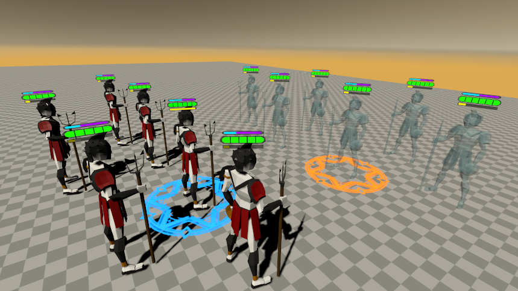
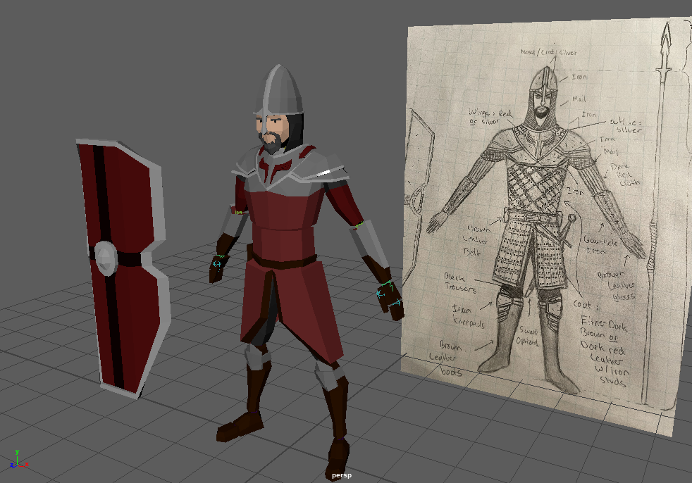
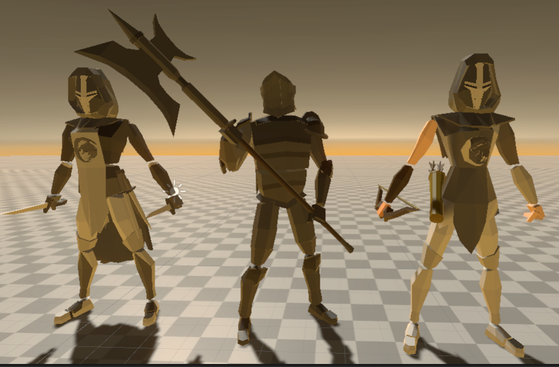
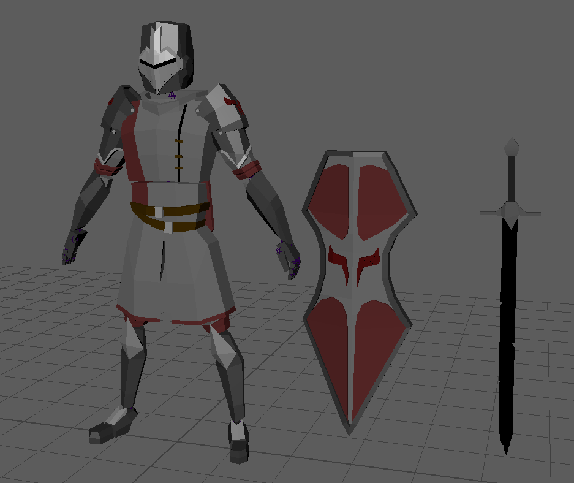
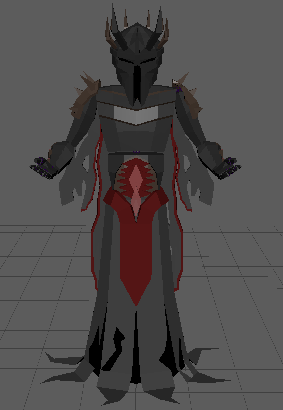
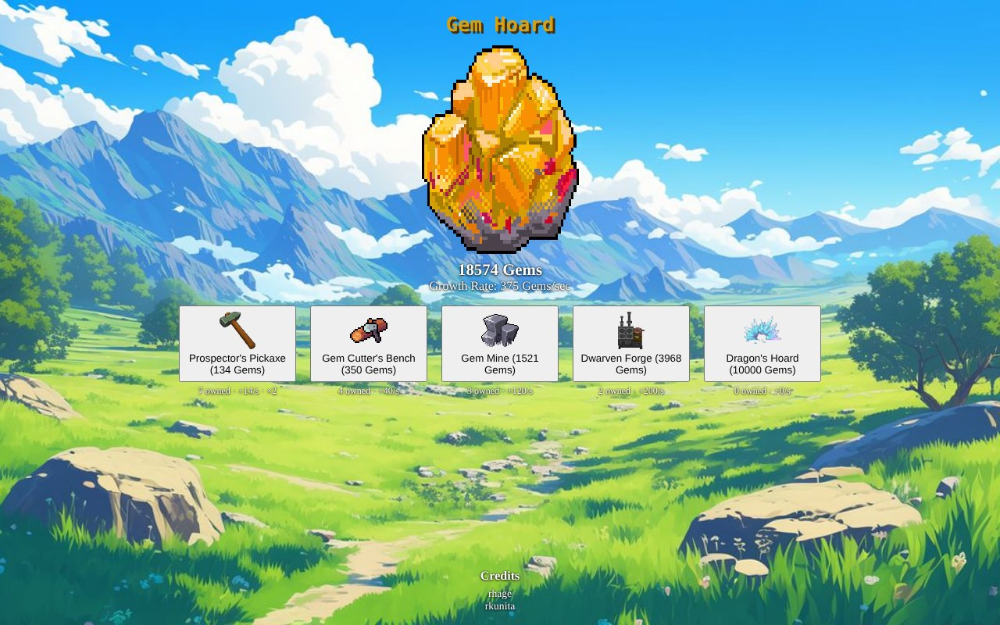

Game Projects
Games I've helped build, covering audio, level design and animation.
Polynex: Realm of Champions
A turn-based strategy game where I was Dead End Studios' sole audio designer.
Over two years, I led all audio and created 20+ original assets, including voiced ability callouts, hit impacts and environmental sounds. I implemented everything in FMOD and Unity, using parameter-driven events so sounds respond to gameplay. I also built the project's sound library and supported the team with animation and level design.







Final Transmission
A 3D walking simulator built by a three-person team in a five-week sprint.
As level designer, I owned the map's layout and flow, planning it in Photoshop and modeling it in Maya before bringing it into the engine. I used terrain and building placement to guide players without waypoints, and designed the lighthouse objective as a landmark visible across the map. I refined the layout through playtesting wherever players got lost.

Gem Hoard
A fantasy browser clicker game built in TypeScript and Vite for UC Santa Cruz's CMPM 121.
I built the core loop, including the click counter and frame-rate-independent automatic growth. I then designed the progression system: unlockable upgrades, 15% price scaling and milestone bonuses that double output. I also added autosaving, visual feedback effects and the background and upgrade art.
Game Capstone
My UC Santa Cruz senior capstone game, in development starting Winter 2027.
Capstone Project (Title TBA)
My senior capstone game at UC Santa Cruz, starting Winter 2027.
Project details, images and video will be added as development begins.